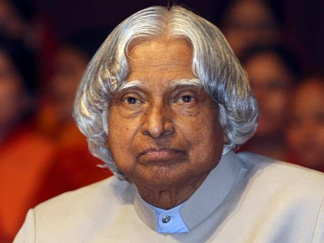

A Life Dedicated to Dreams
Dr. A. P. J. Abdul Kalam was an Indian aerospace scientist and the 11th President of India. He inspired generations through his dedication to science, education, and the development of the nation.
His life reminds us that determination, discipline, and continuous learning can help us achieve great things.
Early Life and Education
Born on October 15, 1931, in Rameswaram, Tamil Nadu, Kalam came from a humble background. He studied physics and aerospace engineering before beginning his career in India's scientific and space research programs.
Major Achievements
- Played an important role in India's missile development programs.
- Contributed to India's space and defence research.
- Served as the President of India from 2002 to 2007.
- Received the Bharat Ratna in 1997.
- Inspired young people to pursue science and innovation.
Timeline of His Life
1931: Born in Rameswaram, India.
1960: Began his professional career at DRDO.
1980: India's Rohini satellite was placed in orbit by the SLV-III launch vehicle project he led.
1997: Awarded the Bharat Ratna.
2002: Became the 11th President of India.
2015: Passed away while addressing students in Shillong.
"Dream, dream, dream. Dreams transform into thoughts and thoughts result in action."
— Dr. A. P. J. Abdul Kalam